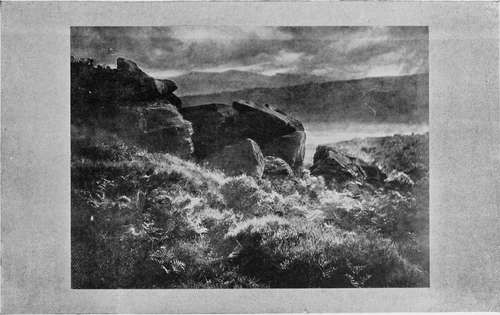

Pictorial Photography. Part 4
Description
This section is from the book "The Barnet Book Of Photography", by Herts Barnet. Also available from Amazon: The Barnet Book Of Photography.
Pictorial Photography. Part 4
The lines are to be only the elementary scheme or skeleton of the composition, which the tones and masses of light symmetrical—and this sometimes occurs even in wild Nature—then it is wrong, because the artifice by which pleasing composition is attained is betrayed, and we feel the thing to be artificial. If, on the other hand, the lines fall so as to make the beholder conscious of their presence, and wish that they were otherwise, then again they are wrong. In neither case should lines or the arrangement of objects suggesting them be felt at all until sought for, whether they are accidental or deliberately introduced. In art it is a maxim that the means by which the thing is done should not proclaim itself. A composition should please without our quite knowing why, and without our being able to see the machinery, as it were, by which our pleasurable sensations are set in motion.
As has already been suggested, the term lines is merely a convenient form of speech, no lines existing in Nature nor in the picture, a photograph consisting of tones—that is, masses of light and shade.
If, when standing before a picture we close the eyes and then suddenly open them, our first impression, apart from colour, is that of masses of light and shade harmoniously arranged; but our attention is certain to rest first and chiefly on the highest light or deepest shadow, usually the former. If we retreat to such a distance that the objects constituting those lights and shades are unrecognisable, the general balance and pleasing arrangement of light and shade should still remain. This is the quality of breadth, which the photographer often seems to find difficulty in understanding. Now, as the highest light and deepest dark possess the power of riveting the attention, it follows that these should be somewhere in the neighbourhood of the principal object, which, as already pointed out, will be near the centre of the composition.
With respect to breadth, let it be said that if the various shadow masses are filled with innumerable details, so as to break them up into tiny lights and darks, they no longer exist as broad masses of shadow; whilst, on the other hand, if they are of such uniform depth, and so devoid of detail as to be mere empty dark spaces, we immediately feel that something has been left out. Thus, with regard to the difficult question as to how much detail and how sharp the picture should be, it may be said that sufficient detail and sufficient sharpness should be admitted as to avoid giving the idea that detail and definition have been sacrificed. Never forget, it is not a question of truth to the facts of Nature ; the treatment of the subject must be such that the pleasing effects of a good arrangement of parts is secured without any obvious or flagrant sacrifice of truth. The delineation of sharp outlines, the redundance of sharp detail, is not wrong in itself, but both are usually inexpedient when considered with respect to the effect to be produced. Similarly, the suppression of sharp focus, so often condemned because misunderstood, has no artistic merit of itself except as it assists the picture to impress the beholder with the general effect.
RAIN FROM THE HILLS. Bv A. HORSLEY HINTON.
The fact is, our photography is so faultlessly complete in its delineation, that it gives us more than the pictorial worker needs for the expression of his idea. A photograph may be irreproachable as an exposition of all that the process can achieve, and the subject even may be of itself beautiful, and yet merely be a good photograph of something beautiful which is not the same as being pictorial, just as we may have a fine picture which is but a poor specimen of photography.
Before leaving the subject of light and shade masses serious reference must be made to the subject of tone and the differentiation of planes, because in these two matters the beginner is commonly found to fail. They may be discussed simultaneously, being in fact inseparable. I must ask the reader to remember a general rule, which is that the further off a dark object is the less dark it appears, and the further off a white object is the less white it becomes, so that, suppose we had objects in the foreground of the picture which were black and white, theoretically at least, there is a point somewhere in the distance at which, if the black and white objects were retired thither, they would be one and the same tone of middle grey, or, as we commonly express it, " half-tone." The relative " tone "—that is, the relative lightness and darkness of objects—depends on their distance from the observer, this alteration of tone being due to the greater or less volume of intervening atmosphere ; but, as white or very light objects are comparatively rare in average landscape, the effect of atmosphere is most commonly seen upon dark objects, with the result that, generally speaking, we may say that the more distant an object the lighter or greyer it becomes. It is the atmospheric greying of objects which contributes the valuable quality of suggesting relief or a standing out of nearer objects.
Look at an average photographic print and see how each plane seems to stick to the other; the nearest tree seems no nearer than the ones a hundred yards behind it, which in turn do not seem half a mile nearer than the belt of trees which form the skyline. Study an average landscape photograph and notice how rarely you feel that you could walk round the various objects; there is no impression of space where figures might move freely between the nearer objects and those more remote. This is because the various planes are not sufficiently differentiated by a difference of tone. On a clear day this does sometimes actually happen in Nature. You know how near the distance sometimes seems, which it ought not to do, but in Nature mere colour tells us something besides; we know the distance is distant, but the picture-maker must avail himself of this difference of tone—must make every effort to secure it in order to help the eftect of his picture, which is, after all, only an artificial affair. Perhaps this may be made a little clearer by another reference to the reproduction of the picture " Rain from the Hills," in which the furthermost hills, the hill ridge in middle distance, and the nearer group of boulders, each stand away from each other, yet all three planes are composed of similar material, rocks and heather, or the like; but in the middle distance the light-coloured fern or grass have become toned down as its rocks have become lighter, and so they form one mass of similar middle tint, the more distant hills behind being greyer and lighter still. Of course, in this case a considerable space intervenes, half a mile perhaps, but the same principle must obtain if the space between more or less remote objects is but a few yards. The effect of " standing-away-from " is not to be confused with stereoscopic effect; we do not aim at counterfeiting solidity, but merely so to render the relative tones of objects that each appears to fall back into its proper place.
Photograph any scene on a clear east-wind day, and again on a hazy day, when the distance is blue with intervening mist, and note the difference—in the latter the landscape will appear to go back ; in the former, everything seems inextricably mixed up. I do not, of course, mean by this that we must only photograph on misty days, but take the comparison merely as a lesson and endeavour to import much of that quality which mist gives even when no mist is present, and thus compensate for photography's proneness to eliminate the effect of atmosphere. But this omission of atmosphere and false rendering to tone is not all photography's fault ; but the practical means to be adopted to secure it I had better touch on under the third heading of Construction.
Much has now been said as to the picture conveying the artist's ideas and its appeal to the spectator's feelings and emotions, and it is time now to turn to the rather more complex and less understood quality of a picture, which I propose to briefly deal with under the heading.
Continue to:
Tags
paper, print, negative, exposure, lens, development, camera, focus